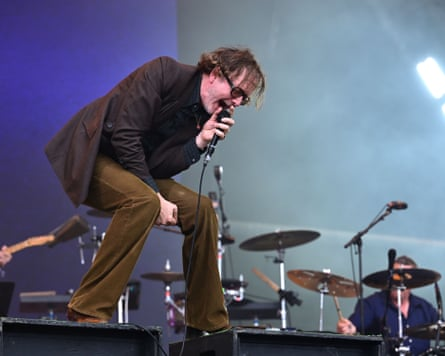

“S orry for people who were expecting Patchwork,” says Jarvis Cocker , in reference to the mysterious name that appeared on the Glastonbury bill in lieu of Pulp’s. “How did you know we were going to play?”
In fairness, Pulp did their best to conceal their appearance at the festival (as Cocker says, it’s 30 years and four days since they were parachuted into the Glastonbury headlining slot, a now-legendary performance that sealed their ascendancy). Keyboard player Candida Doyle even gave an interview to a local Somerset newspaper insisting that while they wanted to play, Glastonbury “weren’t interested”. But clearly no one was convinced – the Pyramid stage is headlining-set heaving.
There’s something charming about the fact that they open with Sorted For E’s & Wizz, a song that takes a pretty equivocal, even steely view of the kind of hedonism that prevails at Glastonbury: proof, should it be needed, that Pulp remain a band who seldom go about things the straightforward way. Listening to them play their 90s hits – Mis‐Shapes, Disco 2000, Babies – you’re struck by how little they had in common with their ostensible Britpop contemporaries. Their wonky collision of 70s glam, French pop, disco and analogue electronics didn’t sound like any of their peers, nor was the prevailing mood of their songs much in tune with the supposed mood of the era. They’re substantially darker and grubbier, consistently sticking up for oddballs and outsiders at a time when alternative music was making a lunge for a mainstream audience. It’s as if they became huge coincidentally, rather than as part of a movement.
Darker and grubbier … Cocker with Pulp on the Pyramid stage.Photograph: Anthony Harvey/Shutterstock
This means that, for all the nostalgia their old songs evoke in anyone who can remember the 90s – and a quick scan around the audience reveals a number of people looking distinctly moist-eyed as they play – they aren’t welded to the era in which they were first recorded, so they haven’t really dated. Moreover, there isn’t really any diminution in quality when they drop in Spike Island and Got To Have Love, two songs from their comeback album More, a smart reapplication of their longstanding approach to a later stage of life. Cocker, meanwhile, remains a fantastic frontman, dispensing sage wisdom about the festival itself – “to enjoy Glastonbury, you have to submit to it” – and reflecting on how terrified the band were to find themselves filling in at short notice for an indisposed Stone Roses in 1995: “But I feel very relaxed today – how about you?”
You’d probably feel quite relaxed too if you knew you had Common People as your closing number. Surely the most straightforwardly rousing anthem ever written about class rage, it causes delirium on a scale not so different from that you can see in old footage of their headlining appearance: a highlight then, it’s also one of the most joyous moments so far in this year’s festival. Presumably somewhat by coincidence, the Red Arrows stage a flypast midway through the song. And off Pulp go, Jarvis promising to see the audience in Arcadia later.